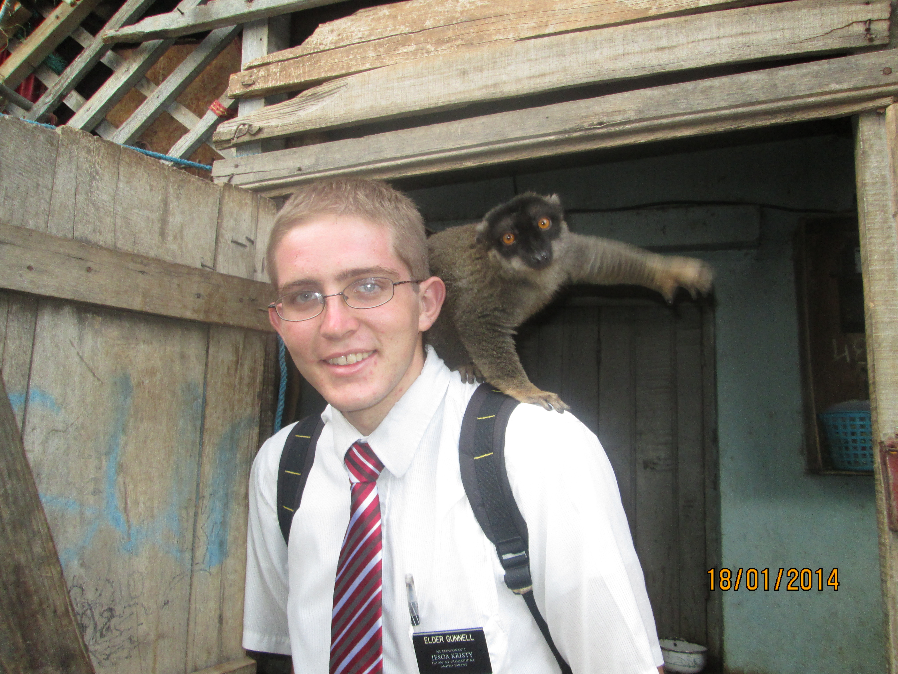
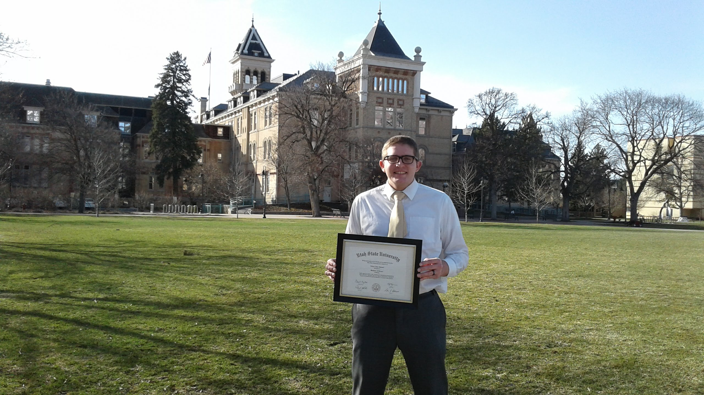
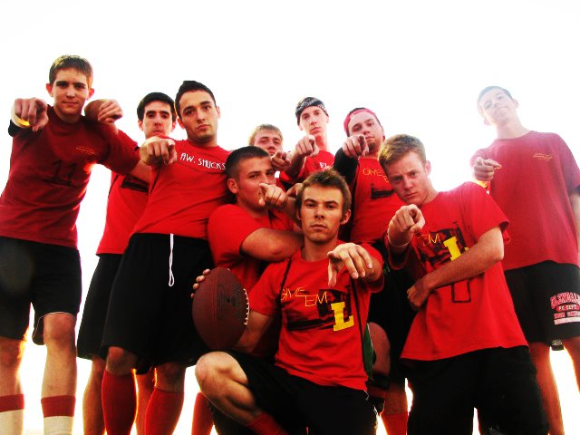
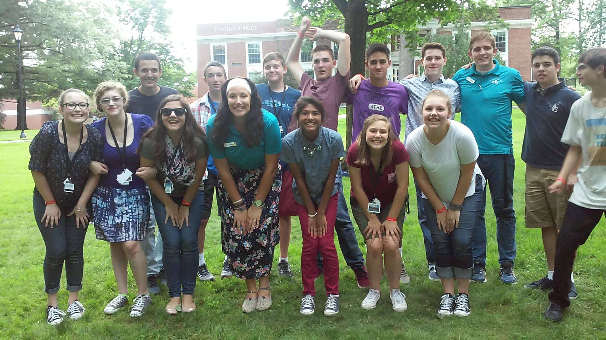
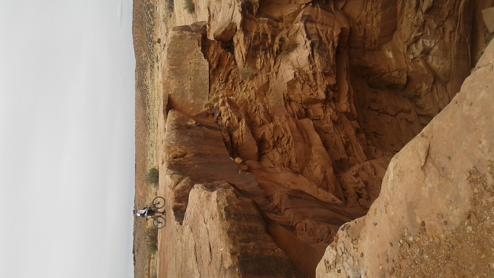
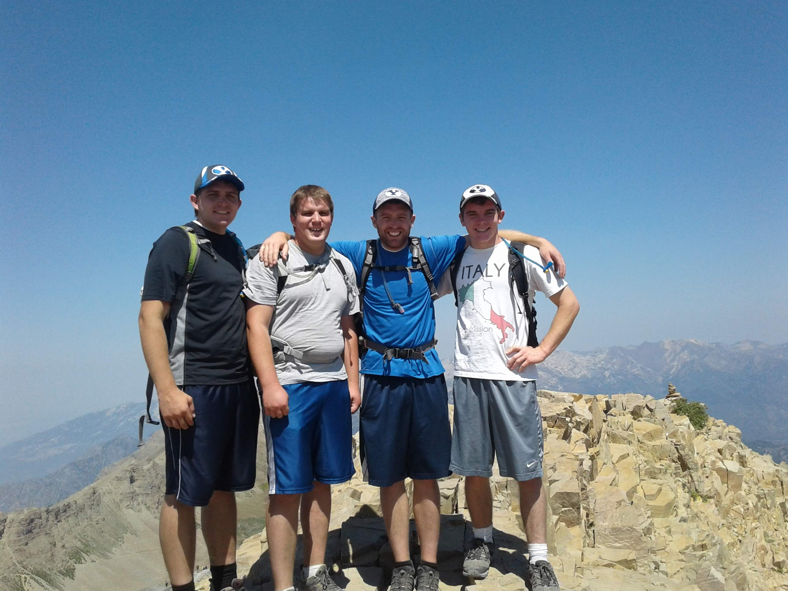

All About Nathan
Growing Up
I grew up in the distant land of Orem, UT. When I was 11, I started working for guy in my ward who owned a
landscaping company. I went to Mountain View High School. I played the clarinet and saxophone in the band. I graduated
from high school with my associates degree.
Mission
I served my mission in the Madagascar, Antananarivo mission from 2012 to 2014 (no it is nothing like the movie). I
served in 5 different areas and really grew in my testimony and developed many friendships.

Utah State
After high school, I went to a semester at Utah State before leaving on my mission. I began as a mechanical
engineering major, but ended up switching to geology. I developed a really strong friendship with all my roommates. It
was that first semester that I met my wife who was the ward choir director. After our missions we ended up in the same
ward again and Dr. Ames's brother was our bishop. We got married in August of 2016. Every summer prior to getting
married, I was an EFY counselor which was an amazing opportunity. I graduated in December 2016 and took a year off from
school while my wife finished up her degree.




BYU
Growing up in Orem I always wanted to go to BYU. I've been a die-hard BYU fan my whole life (my roommates at USU
never appreciated that I would wear my BYU attire whenever BYU played Utah State in anything). My brothers and I have a
tradition of going to 1 road football game every year. I got admitted to grad school in 2018 and began my research that
summer. Last summer I worked for a mining company in Eureka collecting soil samples. I am currently finishing my thesis
and should defend at the end of this month.

Hobbies
I enjoy many different things. I love just about every sport, though I especially enjoy basketball, football,
mountain biking, and disc golf. I also like to cook/bake, especially dessert which can be both a good and bad thing.

